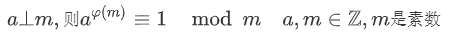
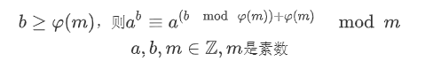

在看这篇文章的时，我相信你已经掌握了“快速幂”算法。众所周知，快速幂是一种利用倍增思想将求幂运算的复杂度从O(n)降低到O(logn)的经典算法，其大致代码如下所示：
对于一般的求幂，这个算法已经非常优了。然而如果碰上了要求的指数非常大，以致于超过long long，达到了高精度，比如有上万位的时候，快速幂也显得无能为力了。
不过通常来说，求快速幂都会进行取模操作。如果模一个素数p的话，我们可以把复杂度进一步降低。
为此，我们首先需要引入欧拉定理和拓展欧拉定理：


这两个定理的证明需要用到数论相关的理论，且证明步骤较为复杂，在这里略去。有兴趣的可以参考oi wiki。
上式的φ(m)是欧拉函数，返回一个整数，代表在整数区间[1,m]中与m互质的整数数目，求一个数的欧拉函数可以用如下的代码：
接下来，我们只需要直接套用快速幂和欧拉函数代码进行组合，即可用拓展欧拉定理求幂，由于指数变成了(b mod φ(m))+φ(m)，所以代码时间复杂度是O(log((b mod φ(m))+φ(m)))，b较大时，比O(log(b))大为优化。整体代码如下：
希望这篇帖子能够对读者有所帮助~